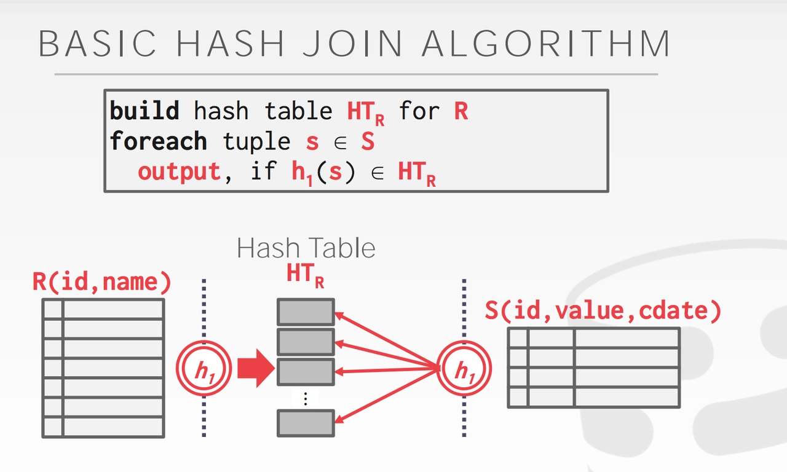

Apache Doris 查询原理
作者: 康凯森
日期: 2020-03-31
分类: OLAP
- Doris 查询简介
- Doris Query 接收
- Doris Query Parse
- Doris Query Analyze
- Doris Query Rewrite
- Doris Query 单机Plan
- Doris Query 分布式Plan
- Doris Query 调度
- Doris Query 执行
- 总结
Doris 查询简介
Doris 的查询和大多数数据库一样，需要经过 Parse,Analyze,Optimize,Plan, Schedule, Execute 等过程。 在 Doris 中，FE 负责查询的 Parse,Analyze,Optimize,Plan, Schedule，BE 负责查询的 Execute。Doris 查询的分布式执行是MPP 架构，相比于 Kylin 和 Druid 的 Scatter-Gather 架构，可以很好地支持 Shuffle 操作，所以对大数据集的 Join 和聚合，处理效率会更高。 Doris 的单机查询执行模型是 Batch 模式的Volcano 模型，相比于 tuple one time 的 Volcano 模型，解释执行的开销更低，CPU 利用效率更高。
Doris Query 接收
Doris 兼容 Mysql 协议，用户可以通过 Mysql 客户端和绝大多数兼容 Mysql 协议的 BI 工具向 Doris 发送 查询。
Doris 的 MysqlServer 接收用户的请求，每个请求都会封装成一个 ConnectContext, ConnectScheduler 会维护一个线程池，每个 ConnectContext 会在一个线程中由 ConnectProcessor 进程处理。 ConnectProcessor 负责查询的处理，审计和返回查询结果给客户端。
Doris Query Parse
ConnectProcessor 会首先进行查询 SQL 的 Parse。
Doris 使用的 Parse 是 Java CUP Parser，语法规则 定义的文件在 sql_parser.cup。
Query Parse 的输入是 SQL 的 String 字符串，Query Parse 的输出是 Abstract Syntax Tree，每个节点都是一个 ParseNode 。
下面是 Doris 中 SqlParser 用法的示例，这个示例中 parse 的结果 StatementBase 就是一个 SelectStmt。
String originStmt = "select lo_shipmode, sum(lo_revenue) from lineorder group by lo_shipmode;";
SqlScanner input = new SqlScanner(new StringReader(originStmt), ctx.getSessionVariable().getSqlMode());
SqlParser parser = new SqlParser(input);
StatementBase statementBase = SqlParserUtils.getFirstStmt(parser);
一个 SelectStmt 由 SelectList, FromClause, wherePredicate, GroupByClause, havingPredicate, OrderByElement, LimitElement 组成，对应一个 SQL 的常见组成。
Doris Query Analyze
ConnectProcessor 进行 SQL Parse 得到 AST 后，由 StmtExecutor 具体负责查询的执行。StmtExecutor 会首先对 AST 进行语法和语义分析。 大概会做下面的一些事情 (每个 ParseNode 的 analyze 方法的实现)：
- 检查并绑定 Cluster, Database, Table, Column 等元信息
- SQL 的合法性检查：窗口函数不能 DISTINCT，HLL 和 Bitmap 列不能 sum, count, where 中不能有 grouping 操作等
- SQL 重写：比如将 select * 扩展成 select 所有列，count distinct 查询重写等
- Table 和 Column 的别名处理
- Tuple, Slot, 表达式分配唯一的 ID
- 函数参数的合法性检测
- 表达式替换
- 类型检查，类型转换（BIGINT 和 DECIMAL 比较，BIGINT 类型需要 Cast 成 DECIMAL）
下面是 Doris 中对 AST Analyze 的示例：
ConnectContext ctx = new ConnectContext(channel);
Analyzer analyzer = new Analyzer(ctx.getCatalog(), ctx);
statementBase.analyze(analyzer);
Doris Query Rewrite
StmtExecutor 在对 AST 进行语法和语义分析后，会让 ExprRewriter 根据 ExprRewriteRule 进行一次 Rewrite。目前 Doris 的重写规则比较简单，主要是进行了常量表达式的化简和谓词的简单处理。 常量表达式的化简是指 1 + 1 + 1 重写成 3，1 > 2 重写成 Flase 等。
如果重写后，有部分节点被成功改写，比如， 1 > 2 被改写成 Flase，那么就会再触发一次语法和语义分析的过程。
对于有子查询的 SQL，StmtRewriter 会进行重写，比如将 where in, where exists 重写成 semi join, where not in, where not exists 重写成 anti join。
Doris Query 单机Plan
AST 经过语法和语义分析后，会首先生成单机的执行 Plan。
Planner planner = new Planner();
planner.plan(parsedStmt, analyzer, tQueryOptions);
单机 Plan 由 SingleNodePlanner 执行，输入是 AST，输出是单机物理执行 Plan, Plan 中每个节点是一个 PlanNode。
SingleNodePlanner 核心任务就是根据 AST 生成 OlapScanNode, AggregationNode, HashJoinNode, SortNode, UnionNode 等。
Doris 在生成单机 Plan 的时候主要进行了以下工作或优化：
- Slot 物化：指确定一个表达式对应的列需要 Scan 和计算，比如聚合节点的聚合函数表达式和 Group By 表达式需要进行物化
- 投影下推：BE 在 Scan 时只会 Scan 必须读取的列
- 谓词下推：在满足语义正确的前提下将过滤条件尽可能下推到 Scan 节点
- 分区，分桶裁剪：比如建表时按照 UserId 分桶，每个分区 100 个分桶，那么当不包含 or 的 Filter 条件包含 UserId ==xxx 时，Doris 就只会将查询发送 100 个分桶中的一个发送给 BE，可以大大减少不必要的数据读取
- Join Reorder：对于 Inner Join, Doris 会根据行数调整表的顺序，将大表放在前面
- Sort + Limit 优化成 TopN
- MaterializedView 选择：会根据查询需要的列，过滤，排序和 Join 的列，行数，列数等因素选择最佳的 MaterializedView
Doris Query 分布式Plan
有了单机的 Plan 之后，DistributedPlanner 就会根据单机的 PlanNode 树，生成 PlanFragment 树。分布式化的目标是最小化数据移动和最大化本地 Scan。
前面示例 SQL select lo_shipmode,sum(lo_revenue) from lineorder group by lo_shipmode; 生成的分布式 Plan 如下：
+---------------------------------------------------------------------------------+
| PLAN FRAGMENT 0
| OUTPUT EXPRS:<slot 2> | <slot 3>
| PARTITION: UNPARTITIONED
| RESULT SINK
| 4:EXCHANGE
| tuple ids: 1
| PLAN FRAGMENT 1
| OUTPUT EXPRS:
| PARTITION: HASH_PARTITIONED: <slot 2>
| STREAM DATA SINK
| EXCHANGE ID: 04
| UNPARTITIONED
| 3:AGGREGATE (merge finalize)
| | output: sum(<slot 3>)
| | group by: <slot 2>
| | tuple ids: 1 |
| 2:EXCHANGE
| tuple ids: 1 |
| PLAN FRAGMENT 2
| OUTPUT EXPRS:
| PARTITION: RANDOM |
| STREAM DATA SINK
| EXCHANGE ID: 02
| HASH_PARTITIONED: <slot 2>
| 1:AGGREGATE (update serialize)
| | STREAMING
| | output: sum(`lo_revenue`)
| | group by: `lo_shipmode`
| | tuple ids: 1
| 0:OlapScanNode
| TABLE: lineorder
| PREAGGREGATION: ON
| partitions=1/1
| rollup: lineorder
| tabletRatio=40/40
| cardinality=119994608
| avgRowSize=26.643219
| numNodes=1
| tuple ids: 0 |
+---------------------------------------------------------------------------------+
1 个 PlanFragment 封装了在一台机器上对同一数据集的操作逻辑。
每个 PlanFragment 包含至少一个 PlanNode，上面的 PLAN FRAGMENT 2 就包含了 OlapScanNode 和 AggregationNode。
Plan 分布式化的方法是增加 ExchangeNode，执行计划树会以 ExchangeNode 为边界拆分为 PlanFragment。ExchangeNode 的作用是实现不同 BE 之间的数据交换，类型 Spark 和 MR 中的 Shuffle。
各个 Fragment 的数据流转和最终的结果发送依赖：DataSink。比如 DataStreamSink 会将一个 Fragment 的数据发送到另一个 Fragment 的 ExchangeNode，ResultSink 会将查询的结果集发送到 FE。
每个 PlanFragment 可以在每个 BE 节点生成 1 个或多个执行实例，不同执行实例处理不同的数据集，通过并发来提升查询性能。
DistributedPlanner 中最主要的工作是决定 Join 的分布式执行策略：Shuffle Join，Broadcast Join，Colocate Join，和增加 Aggregation 的 Merge 阶段。
决定 Join 的分布式执行策略的逻辑如下：
- 如果两种表示 Colocate Join 表，且 Join 的 Key 和分桶的 Key 一致，且两张表没有正在数据 balance，就会执行 Colocate Join
- 如果 Join 的右表比较少，集群节点数较少，计算出的 Broadcast Join 成本较低，就会选择 Broadcast Join，否则就会选择 Shuffle Join。
Doris Query 调度
在生成查询的分布式 Plan 之后，Coordinator 会负责 PlanFragment 的执行实例生成，PlanFragment 的调度，每个 BE 执行状态的管理，查询结果的接收。
有了分布式 Plan 之后，我们需要解决下面的问题：
- 哪个 BE 执行哪个 PlanFragment
- 每个 Tablet 选择哪个副本去查询
- 如何进行多实例并发
前面提到，Doris 会先进行分区，分桶裁剪，得到需要访问的 Tablet 列表，然后对于每个 Tablet，Doris 会先选择版本匹配的，健康的，所在的 BE 状态正常的副本进行查询，然后在最终决定每个 Tablet 选择哪个副本查询的时候，是随机的方式，不过 Doris 会尽可能保证每个 BE 的请求均衡。假如我们有 10 个 BE，10 个 tablet，最终调度的结果理论上就是每个 BE 负责 1 个 tablet 的 Scan。具体逻辑在computeScanRangeAssignmentByScheduler。
当包含 Scan 的 PlanFragment 由哪些 BE 节点执行确定后，其他的 PlanFragment 实例也会在 Scan 的 BE 节点上执行，不过具体选择哪个 BE 是随机选取的。
当每个 PlanFragment 实例的 BE 节点确定后，每个 DataSink 的目标 BE 节点自然也就确定了。
多实例并发执行的话，是数据并行的方式，假如我们有 10 个 tablet，并行度设置为 5 的话，那么 Scan 所在的 PlanFragment，每个 BE 上我们可以生成 5 个执行实例，每个执行实例会分别 Scan 2 个 tablet。
当我们知道每个 PlanFragment 需要生成多少个执行实例，每个执行实例在哪个 BE 执行后，FE 就会将 PlanFragment 执行相关的参数通过 Thrift 的方式发送给 BE。
Doris Query 执行
Doris 的查询执行模式 Volcano 模式，不过做了 Batch 的优化，不同的 operator 之间以 RowBatch 的方式传输数据。
BE 的 BackendService 会接收 FE 的 查询请求，让 FragmentMgr 进行处理。 FragmentMgr::exec_plan_fragment 会启动一个线程由 PlanFragmentExecutor 具体执行一个 plan fragment。PlanFragmentExecutor 会根据 plan fragment 创建一个 ExecNode 树，FE 每个 PlanNode 都会对应 ExecNode 的一个子类。
PlanFragmentExecutor::get_next_internal 会驱动整个 ExecNode 树的执行，会自顶向下调用每个 ExecNode 的 get_next 方法，最终数据会从 ScanNode 节点产生，向上层节点传递，每个节点都会按照自己的逻辑处理 RowBatch。 PlanFragmentExecutor 在拿到每个 RowBatch 后，如果是中间结果，就会将数据传输给其他 BE 节点，如果是最终结果，就会将数据传输给 FE 节点。
下面我们看下一些重要的 ExecNode 的处理逻辑
OlapScanNode
OlapScanNode 在拿到 FE 的请求参数后，会首先将下推到 Scan 节点的谓词表达式转为存储层的数据结构 TCondition，然后为了提高 Scan 的并发，会将 Scan 的范围切分的更细，然每个 Scan 线程可以只 Scan 部分数据，Scan 范围切分完之后，就会通过线程池启动多个线程，让每个 OlapScanner 线程 Scan 特定部分的数据。
一个 OlapScanner 会绑定一个 Tablet，OlapScanner 会根据 Scan 的 Tablet 和，Version，构造好 RowsetReader。RowsetReader 会逐行返回数据，每行数据是一个 RowCursor, OlapScanner 会先将 RowCursor 转为 Tuple， 因为在查询计算层，都是基于 Tuple 进行计算的，然后会用没有下推到存储层的 Filter, 对 Tuple 再进行一次过滤，最后会把 Tuple 加入 RowBatch 中，如果 RowBatch 满了，就会加入到 RowBatch 的 Queue 中，OlapScanNode 线程会不断从这个 Queue 中读取数据。
OlapScanNode 针对大查询做了一个优化，因为 OlapScanner 的线程池是整个 BE 进程共享的，所以可能出现一个大查询占用了所有 OlapScanner 线程，导致小查询迟迟无法 Scan。 OlapScanNode 会根据 Scan Range 的个数，Scan 的数据量确定每个 Scan 的优先级，Scan Range 个数和 Scan 数据量越小，优先级越高，不过也会定期提高大查询的优先级，避免大查询完全饿死。
AggregationNode
在 open 阶段，会消费子节点所有数据。 对于没有 group by 的聚合查询，AggregationNode::process_row_batch_no_grouping 会对每个 RowBatch 进行循环，对每个 Tuple 调用聚合函数。 如果是 Update 阶段，会调用每个聚合函数的 update function，如果 Merge 阶段，会调用每个聚合函数的 merge function。 对于有 group by 的聚合查询，就需要使用到 HashTable, HashTable 的 key 是 group by，HashTable 的 Value 是聚合函数的状态值。处理过程就是对 group by 字段相同的聚合函数的状态值不断调用聚合函数进行更新。
在 get_next 阶段，会遍历 HashTable，用 Tuple 填充 RowBatch，然后向上层返回。
PartitionedAggregationNode
核心逻辑和 AggregationNode 相同，不过做了下面几点优化：
- 使用了 PartitionedHashTable
- 支持 Spill Disk
- 支持 Prefetch
- 支持 streaming preaggregation, 对于有 group by 的聚合查询，在 update 阶段，将聚合的过程从 open 阶段移到 get_next 阶段，每接受一批 RowBatch，就会进行聚合，并输出。
ExchangeNode
前面提到，Plan 分布式化的方法是增加 ExchangeNode，DataStreamSink 会将一个 Fragment 的数据发送到另一个 Fragment 的 ExchangeNode。
具体来讲， PlanFragmentExecutor::get_next_internal 获取到一个 Rowbatch 的数据后，就会调用 DataStreamSender::send 发送数据，DataStreamSender 会为每个 BE 维护一个 Channel，每个 Channel 的数据满一个 RowBatch，就会通过 BRPC 发送到目标 BE 节点。
如果 DataStreamSender 发送的数据是有序的，DataStreamRecvr 就需要为每个 Sender 维护一个单独的队列，最后再 merge，如果是无序的，DataStreamRecvr 只需要为所有 Sender 维护一个队列。
每个 ExchangeNode 会持有一个 DataStreamSender，来获取其他 BE 节点发送来的数据。
HashJoinNode
HashJoin的核心步骤是两步，分为 Build 和 Probe 两个阶段。 Build 阶段：根据 Inner 表的数据构造 hash table。 Probe 阶段：对于 Outer 表的每一行数据， 先根据join key 查找 hash table，然后再根据Join 的其他谓词进行过滤，获取Join成功的行。

如何确定 Inner 表 和 Outer 表？
- Left Outer Join：左表是 Outer 表，右表是 Inner 表
- Right Outer Join：跟 Left Outer Join 相反，右表是 Outer 表，左表是 Inner 表
- Inner Join：优化器估算出的较大表是 Outer 表，较小的表是 Inner 表
- Semi Join、Anti Semi Join、Left Outer Semi Join 或 Anti Left Outer Semi Join：左表是 Outer 表，右表是 Inner 表。
NULL 值的问题：因为NULL 和 NULL 不等，所以：
- 在用 Inner 表建 NULL 值的时候会忽略掉 Join Key 中有 NULL 的数据
- 当 Outer 表中某行数据的 Join Key 中有 NULL 值的时候我们不会去查哈希表
- 对于LEFT_OUTER_JOIN， hash table 不需要存储 Null, 但是对于RIGHT_OUTER_JOIN，hash table 需要存储 Null。
总结
本文介绍了 Doris 查询处理的整个流程。目前 Doris 的查询优化器和查询执行器都有很大的优化空间，我们在今年计划对查询优化器和查询执行器进行一次大的重构，预期会进一步提升 Doris 的查询性能。
《OLAP 性能优化指南》欢迎 Star&共建
欢迎关注微信公众号